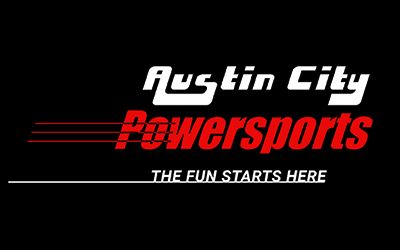
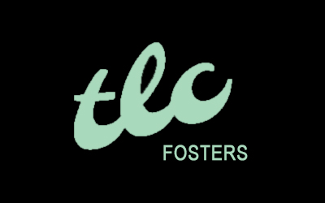
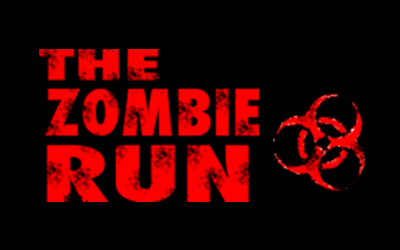

Austin City Powersports
Austin City Powersports is a local, family-owned motorcycle and scooter full service dealer. I was tasked with building them a clean and simple website to promote their business and to serve their customers. The ease of navigation was their main concern, for their loyal older clientele, but they also wanted to appeal to the younger demographic as they were starting to sell more scooters.
TLC Fosters
TLC Fosters is a non-profit organization located in Illinois that rescues animals, mostly cats. Their main objective is to direct a network of foster homes and promote local fostering and adoption events. The are constantly in need of help and support. Their site needs to be attractive and informative but also blunt, concise and emotional.
Conservation Services

Conservation Services is a local, family-owned and operated insulation company. I was tasked with building them a website whose main objective was getting into contact with potential customers, but they also wanted to inform anyone visiting the site of the benefits of some of the services that they provide. They wanted a simple and fun website that would be easy to navigate through.
The Zombie Run
The Zombie Run is an annual 5k with a terrifying theme! As you run you are chased by zombies. This is a fun new take for pretty established marathon scene, with potential to attract a whole new demographic to that scene. The site was meant to be scary (while maintaining appeal), without too much clutter to distract from the registration and volunteer links.